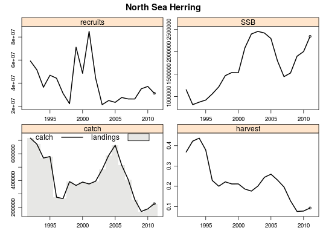
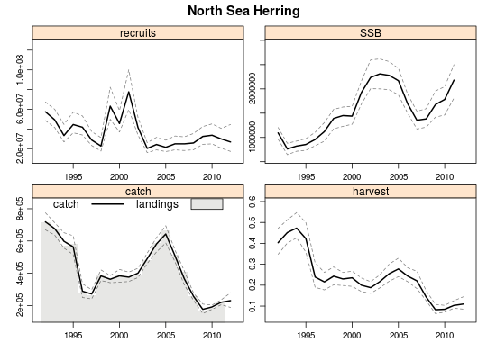

Method to sample from the variance-co-variance matrix and based on a multi-variante normal distribution generate new starting conditions of numbers-at-age and f-at-age.
monteCarloStock(stck,sam,realisations,run.dir=tempdir())
FLStock
FLSAM
Large number of realisations might take longer to create.
An FLStock with iter=number of realisations is returned
data(NSH) data(NSH.sam) #Stock with one iter summary(NSH)#iter = 1#> An object of class "FLStock" #> #> Name: North Sea Herring #> Description: Imported from a VPA file. ( ./data/index.txt ). Fri May 4 12:16:13 2012 [...] #> Quant: age #> Dims: age year unit season area iter #> 9 20 1 1 1 1 #> #> Range: min max pgroup minyear maxyear minfbar maxfbar #> 0 8 8 1992 2011 2 6 #> #> catch : [ 1 20 1 1 1 1 ], units = tonnes #> catch.n : [ 9 20 1 1 1 1 ], units = thousands #> catch.wt : [ 9 20 1 1 1 1 ], units = kg #> discards : [ 1 20 1 1 1 1 ], units = tonnes #> discards.n : [ 9 20 1 1 1 1 ], units = thousands #> discards.wt : [ 9 20 1 1 1 1 ], units = kg #> landings : [ 1 20 1 1 1 1 ], units = tonnes #> landings.n : [ 9 20 1 1 1 1 ], units = thousands #> landings.wt : [ 9 20 1 1 1 1 ], units = kg #> stock : [ 1 20 1 1 1 1 ], units = NA * kg #> stock.n : [ 9 20 1 1 1 1 ], units = NA #> stock.wt : [ 9 20 1 1 1 1 ], units = kg #> m : [ 9 20 1 1 1 1 ], units = NA #> mat : [ 9 20 1 1 1 1 ], units = NA #> harvest : [ 9 20 1 1 1 1 ], units = f #> harvest.spwn : [ 9 20 1 1 1 1 ], units = NA #> m.spwn : [ 9 20 1 1 1 1 ], units = NAplot(NSH)#Generate new stock with 100 iters newStock <- monteCarloStock(NSH,NSH.sam,100) #Now does it look? summary(newStock)#iter = 100#> An object of class "FLStock" #> #> Name: North Sea Herring #> Description: Imported from a VPA file. ( ./data/index.txt ). Fri May 4 12:16:13 2012 [...] #> Quant: age #> Dims: age year unit season area iter #> 9 21 1 1 1 100 #> #> Range: min max pgroup minyear maxyear minfbar maxfbar #> 0 8 8 1992 2012 2 6 #> #> catch : [ 1 21 1 1 1 100 ], units = tonnes #> catch.n : [ 9 21 1 1 1 100 ], units = thousands #> catch.wt : [ 9 21 1 1 1 100 ], units = kg #> discards : [ 1 21 1 1 1 100 ], units = tonnes #> discards.n : [ 9 21 1 1 1 100 ], units = thousands #> discards.wt : [ 9 21 1 1 1 100 ], units = kg #> landings : [ 1 21 1 1 1 100 ], units = tonnes #> landings.n : [ 9 21 1 1 1 100 ], units = thousands #> landings.wt : [ 9 21 1 1 1 100 ], units = kg #> stock : [ 1 21 1 1 1 100 ], units = NA * kg #> stock.n : [ 9 21 1 1 1 100 ], units = NA #> stock.wt : [ 9 21 1 1 1 100 ], units = kg #> m : [ 9 21 1 1 1 100 ], units = NA #> mat : [ 9 21 1 1 1 100 ], units = NA #> harvest : [ 9 21 1 1 1 100 ], units = f #> harvest.spwn : [ 9 21 1 1 1 100 ], units = NA #> m.spwn : [ 9 21 1 1 1 100 ], units = NAplot(newStock) #Voila!